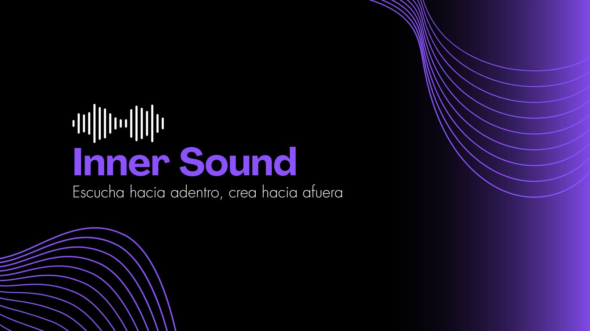

Inner Sound es una experiencia creativa de inmersión musical guiada. El sonido no acompaña: conduce.
A través de frecuencias específicas, el sistema nervioso se regula, el ruido mental disminuye y se crean las condiciones internas donde la creatividad aparece.
No se trata de entender. Se trata de permitir que el cuerpo escuche antes que la mente.
Solicitar experiencia